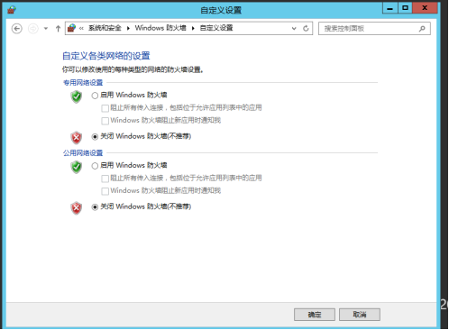
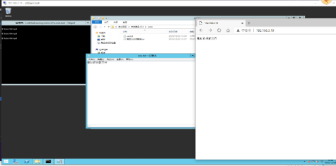
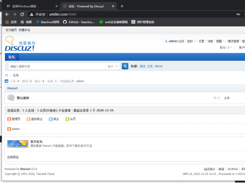
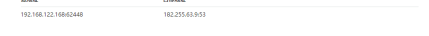

我搭建的论坛地址
用户名:admin密码:admin
网站如何搭建
服务器
服务器与家庭电脑的区别
家庭电脑：偏向用户体验，视觉效果，画面流畅
长用于：打游戏，图形设计，各种桌面应用
系统区别：
Windows 2000
Windows XP10年前普及标配IIS6.0
Windows 75年前普及标配IIS7.5 or 7.0
Windows 8.1标配 IIS8.0 or 8.5
Windows 10标配 IIS10
服务器：不接显示器，不需要显卡（cup、内存）
常用于：专门运行某些程序
系统区别：
Windows 2003 10年前普及标配IIS6.0
Windows 20085年前普及标配IIS7.5 or 7.0
Windows 2012目前普及标配 IIS8.0
Windows 2016目前普及标配 IIS8.5
Windows 2019暂未普及标配 IIS10
容器(软件，生存环境)
IIS
ASP+Access
ASPX(ASP.NET)+MSSQL
Apache
PHP+Mysql
Nginx
PHP+ Mysql
Tomcat
JSP+Mysql or Oracle
数据库
Access
SQL server(MSSQL)
Mysql
Oracle
Redis
Mongodb
脚本
动态脚本
ASP
ASPX
JSP
PHP
静态脚本
HTML
备注：容器与脚本并非绝对的绑定关系
学前准备
虚拟机设置桥接连接网络
1.进入控制面板，选择网络共享中心
2.选择更改 适配器设置
3.找到当前使用的网络，右键 > 属性
4.记下连接名称
5.VM Ware选择编辑 > 虚拟网络编辑器
6.添加网络
7.选择桥接，并交接至刚才记下的连接名
8.点击应用>确定
9.右键虚拟机>选择设置
10.选中网络适配器
11.选择自定义桥接
12.选择刚才添加的桥接模式并确定
.
mstsc命令远程连接服务器
连接失败原因
1.要连接的服务器未允许远程连
进入服务器
进入开始界面 > 输入允许远程计算机访问 会有选项出来 点击打开
选择允许远程计算机访问>应用
2.关闭防火墙
同理 进入开始界面搜索防火墙 选择windows防火墙
选择启用或关闭防火墙进入如下界面
选择关闭并确定

选择高级设置>防火墙属性>防火墙状态修改为关闭>应用>确定
进入powershell
输入mstsc /admin /v:要访问的计算机ip地址
回车，输入账号密码后弹出桌面
好处：屏幕随意调大小
可以直接将桌面的文件复制粘贴到虚拟机
但是，当重启电脑时，虚拟机ip地址会改变，导致mstsc连接失败
将虚拟机ip地址设置为固定的
打开网络连接
双击选则连接的网络>属性
双击internet协议版本4
设置喜欢的ip地址并确定
这时即使重启，也可以用同样的ip地址连接，不用每次都要ipconfig查看ip地址
Apache+html
启动apache服务
然后 通过浏览器访问ip地址：端口号访问index.html
默认访问Apache24\htdocs目录下的index.html文件
修改默认访问目录
可以在配置文件“Apache24\conf\httpd.conf”自定义访问哪个文件下的文件
这里将默认访问的路径注释掉，改为自己的目录
重启apache服务
这时就可以通过ip地址访问自定义的目录（默认端口：80）
修改默认访问文件
同样可以修改默认访问目录下的哪个文件
这里将原来默认访问index.html注释掉改为DirectoryIndex xxx.txt
也可以这样写DirectoryIndex xxx.txt xxx1.txt xxx2.txt 备注：(当前面一个文件不存在时默认访问第下一个，以此类推)
访问结果，直接展示文件内容

Apache+php
配置PHP
1.进入php目录
2. 复制一份php.ini-development文件为php.ini
编辑php.ini 找到; extension_dir = "ext"追加
extension_dir = "ext"
extension=php_mbstring.dll
extension=php_mysql.dll
extension=php_mysqli.dll
设置默认时区
apache关联 php
1、 打开apache的配置文件找到#LoadModule xml2enc_module modules/mod_xml2enc.so
2、 换行追加LoadModule php5_module C:/Apache24/php/php5apache2_4.dll（路径写自己的）
3、 查找 #AddEncoding x-gzip .gz .tgz
4、 追加AddType application/x-httpd-php .php
AddType application/x-httpd-php-source .phps
5、 指定php.ini配置文件路径（文件最后追加PHPIniDir "C:\Apache24\php " ）
6、 配置DirectoryIndex

7、 将下面两行代码的注释（#号）去掉
编写简单的PHP
重启apache，访问
分别嗅探HTTP与HTTPS协议的网址
1.嗅探局域网主机(192.168.3.13)访问的HTTP协议网址
1.打开菜鸟工具（Cain.exe）点击configure,点击应用
2.选择抓包工具，进入hosts列表，启动抓包工具,扫描当前局域网所有设备信息
3.选择arp工具，选择局域网路由ip与要嗅探的主机ip，开始嗅探
4.访问http协议的网站
输入账号密码，点击登录
这时就嗅探到了刚刚输入的账号与密码
2.嗅探局域网主机(192.168.3.13)访问的HTTPS协议网址
换成HTTPs协议的网址，是嗅探不到的
实战服务器搭建论坛
1.安装宝塔
进入宝塔管理页面安装apache，mysql,php,IIS
2.添加站点
默认端口是80，这里因为80端口我准备放其他项目，所以设置为9684
国内服务器必须备案才可以使用80默认端口

3.这时就可以通过域名加端口号访问了
4.将开源项目移至网站根目录
5.访问网站，傻瓜式安装下一步
创建用户discuz,创建数据库discuz
设置连接的数据库
等待安装完成，论坛就搭建好啦

溯源
从木马中分析
分析木马
改木马会将自己设置为隐藏文件，
会把自己放在C:\ProgramData\Microsoft\Windows\Start Menu\Programs\Startup（开机自动启动）
会获取system权限，以系统权限启动服务
本机会与主机49.234.26.139的2020端口建立连接
并没有查询到对方的开放端口
目前拿到信息，对方ip 49.234.26.139,对方域名www.911520.club
pip.net查询到ip是在tencent.com注册的
whois查询域名
邮箱：919262077@qq.com
手机：17671145681
换个玩玩，有点颜色的域名
该木马会将本机与对方主机182.255.63.9的53端口建立连接

这个ip是在kwaihingidc.com注册的
他开放了80端口
通过ip反查到域名
2020-12-25tools.daji8.me
子域名
历史解析ip
2020-12-25 182.255.63.9IDC: kwaihingidc.com
2020-10-28 120.89.69.3中国香港的
绑定过域名jqb.shopingchina.net（阿里云的）
开放端口
443
88
tools.daji8.me 绑定182.255.63.9
归属地IDCkwaihingidc.com
Whois查询域名
得到邮箱，电话历史
时间注册者邮箱电话
2016-01-13Junzi+086.02123623236
2016-02-04Jun ziadmin@daji8.me+086.02123623236
2020-10-31Registration Privatedaji8.me@domainsbyproxy.com +1.4806242599
但是感觉电话是假的
Burp suite
原理
客户端发送请求数据包Burp Suite篡改请求数据包服务端
客户端篡改响应数据包Burp Suite返回响应数据包服务端
局部代理和全局代理
全局代理
抓取整个PC上面所有的数据包
局部代理
抓取某个浏览器上通过某个端口向外传输的数据包
篡改请求后响应数据包的源码
1.选择开启响应拦截
修改响应数据包
页面会出现被篡改的内容
伪造UA
即伪造当前的系统
例如将自己伪造成安卓
发送给服务端的数据包就会告诉服务端我们是用安卓浏览器访问的
Cookie与session存储流程：
服务端：
request=getRequest;(获取用户的请求)
cookie = request.getCookie;(拿到用户的cookie)
If (cookie!=Null):#如果cookie存在
#根据cookie里的用户名和密码查询数据库是否存在改用户
User =getUser(‘select username,password
from user
where username=”’+cookie.get (“Username”)+’
” and password=”’+cookie.get (“Password”)+’”’);
If (user!=null):
#如果存在该用户
SetCookie(user)#给用户创建一个cookie
Return “home.jsp” #跳转到登录页
Else:##没有存储cookie
Return “login.jsp”#直接跳转到登录页面
Session的存储同理只不过判断玩session！=null就可以直接返回true了，因为session
存储在服务端，很难被篡改
渗透过程中的信息收集
1. 根据sessionid名称信息收集
1.1 http://ums.zj165.com/
将.jsp修改为.jsP无法访问，说明是Liunx系统，Linux严格区分大小写
因为这个网站不是https,可能应该很穷吧，所有我判断他使用的mysql数据库
综合就是jsp+tomcat+linux+mysql
Epsessionidk看不出来是个啥东西
1.2 http://www.yofoto.cn/index.asp
将aps改为asP依然可以访问——————windows系统
ASPSESSIONIDAADARCAR=BKEMEEOBNILHHCOEMOBDAAIO
判断为IIS+ASP+Access
没有找到iis的版本，所以没判断window版本
1.3 http://d.qcmy.cn/index.aspX
IIS7.5
判断为windows 2008+IIS+aspx+Sql server
1.4. http://www.xyhospital.com/index.php?id=1
php修改为phP报404——————linux系统
apache
判断为Linux+apache+php+mysql
2. 通过404，403页面收集
404，403页面在IIS中每个版本都有所区别
判断IIS使用的版本进而判断系统版本
3.通过响应包获取信息
3.1.server:iis7.5判断系统版本为windows2008
X-powred-By 判断该网站脚本为ASP.NET
4.对指定目标的信息搜集
Xuzj@yofoto.cn
微步查询www.yofoto.cn（不知道为啥高级查询不扣我积分，很香）
子域名：
百度语法：site:*www.yofoto.cn没找到有用的信息
Layer：网崩了，玩不起
知识点
1. 容器与脚本非绑定型关系
2. 脚本与数据库非绑定类型关系
3. Mysql数据库中用户@符号后面的含义
root@127.0.0.1 只允许通过本机登录root账户
将其他用户删掉，只留下host为127.0.0.1的root用户
发现非192.168.3.19的主机无法连接数据库
root@192.168.3.43 只允许ip地址为192.168.3.43的电脑登录root账户
添加一个192.168.3.43用户
这是便可以通过192.168.3.43连接数据库了
root@% 允许从任意ip地址登录root账户
将列：host值：192.168.3.43修改为%
这时发现可以在任意主机连接mysql
3.1数据库结构概括
库、表、列(字段)、值、记录（每一行为一条记录）
4.数据库默认最高权限管理员账户名称
SQL Server>sa
Mysql>root
Oracle>sys
5.网络划分
本机127.0.0.1(localhost)
局域网
广域网
公网
6.内网ip地址等级划分
查看ip地址的方式：
局域网ip：
linux: ifconfig
windows: ipconfig
公网：curl icanhazip.com
备注(应该是公网ip，因为我服务器用这个命令查到的ip和服务器的公网ip是一样的，不确定是因为 在家用手机浏览icanhazip.com与电脑浏览返回的ip是一样的)
A类IP地址···10.xx.xx.xx
B类IP地址·172.xx.xx.xx
C类IP地址·192.168.xx.xx
7.IP段划分
A段192.0.0.0/8192.0.0.1~192.255.255.255 可分配255*200*255-1个ip地址
B段192.168.0.0/16192.168.0.1~192.168.255.255 可分配255*255-1个ip地址
C段192.168.1.0/24192.168.1.1~192.168.1.255 可分配254个ip地址
8.加密知识点
MD5加密
32位
16位
MYSQL5加密
AES加密
Sha256加密
加密：理论上无法用算法反向通过密文解密出明文
9．编码知识点
URL编码
16进制编码
Hex编码
Base64编码
编码：可以利用一种算法，反向通过密文解码出明文
10.CMS(开源web应用)
10.1文章内容管理系统
论坛CMS
Discuz
商城CMS
Shopnc
Ecshop
官网CMS
PHPCMS
DEDECMS
帝国CMS
WordPress
10.2开源CMS
将Web应用源码公开给社会使用
11.计算机端口
计算机端口范围1~65535
11.1.常见的默认端口
Web
HTTP80
HTTPS443
数据库
Mysql3306
Oracle1521
MSSQL1433
Windows的远程桌面(mstsc)3389
Linux远程终端（SSH）22
邮件通信端口
25
465
Tomcat8080
Flask5000
12.通信协议
Web
HTTP协议不加密
HTTPS协议加密
TCP/IP协议
UDP协议
DNS协议
……………..
13.集成环境
一键安装程序所需的所有环境，直装直用，无需人工干扰
14服务启动与程序的区别
服务启动：
系统启动后自动运行的程序
程序启动
系统启动后需要用户手动打开运行的程序
15.虚拟机、云服务器、物理主机
物理服务器：
类似于自己的PC主机
云服务器：
从屋里服务器中分割出来的虚拟机
虚拟主机：
基于云服务器上面开放一个目录的操作权限
16.网站根目录与默认网站首页
网站根目录：
存放默认网站首页的目录，网站的源码都放在里面
默认网站首页：
输入网址后默认跳转的页面即默认网站首页
17.Cookie与session
Cookie:
Cookie 存储在本地（客户端）
存储时间长，只要删除Cookie就永久存在
没有session存储安全
以键值对的方式存储数据
例如 KEY :VALUE
Name:admin
Password:admin
Session
Session存储在服务端
具有时效性，我记得默认是半个小时，可以设置
浏览器关闭即清空session
比Cookie更安全
18.Linux与windows的不同之处
Linux
没有可视化界面（GUI）
严格区分大小写
例如a.jpg和A.jpg是两个不同的文件
Windows
有可视化界面（GUI）
不区分大小写
例如a.jpg和A.jpg是同一个文件
19.相对路径与绝对路径
相对路径
/a/b/c.txt
指向当前目录下文件夹‘a’下的文件夹‘b’下的c.txt文件
../temp/d.txt
指向当前文件夹的父目录下的文件夹‘temp’下的d.txt文件
绝对路径
C:/a/b/c.txt
即顺着这个路径就可以找到c.txt
判断Web应用是否属于CMS的重要性
1.CMS属于开源的程序，被很多白帽子黑客通过代码审计漏洞，也就是人家吃剩下的，找到漏洞的可能性较小
2.相反，不开源的程序 相对于 开源的 更容易挖到漏洞
20.白盒测试与黑盒测试
白盒测试
指攻击作者通过其web应用源码进行漏洞审计
黑盒测试
至攻击者没有任何帮助的前提下进行漏洞挖掘
21.状态码的含义
200文件存在/请求成功
304从本地缓存中获取文件状态码
404访问的文件不存在
403访问的文件没有权限或者目录无权限列表
目录遍历漏洞
500服务器内部错误
502源服务器无法访问